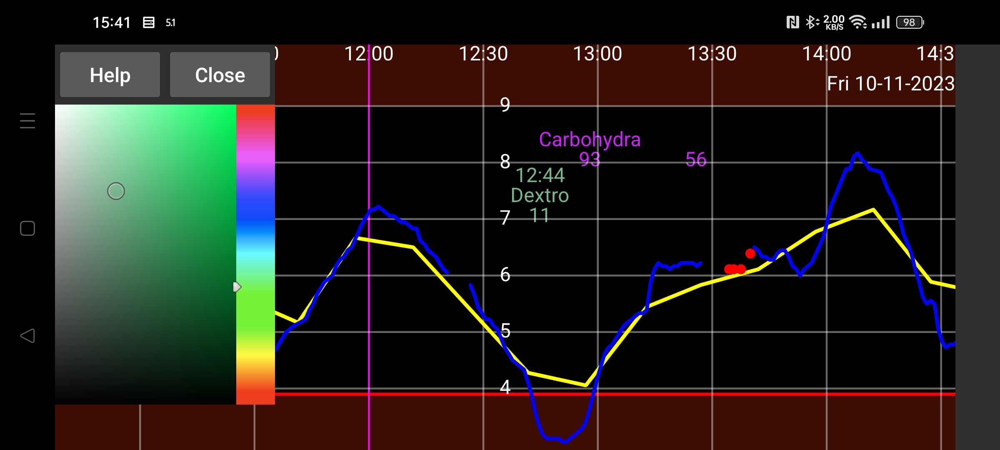

ar be de es fa fr hi it ja ko nl pl pt ru sv tr uk uz zh en
در این صفحه رنگ عددها، منحنیها و نقاط اسکن را تغییر دهید. ابتدا نقطهای از منحنی، یک اسکن یا یک مقدار ثبتشده را لمس کنید تا جزئیاتش نمایش داده شود؛ سپس در صفحهٔ رنگها، رنگ دلخواه را انتخاب کنید. از آن پس منحنی، نقطهٔ اسکن یا مقدار مربوط با رنگ انتخابی دیده میشود.